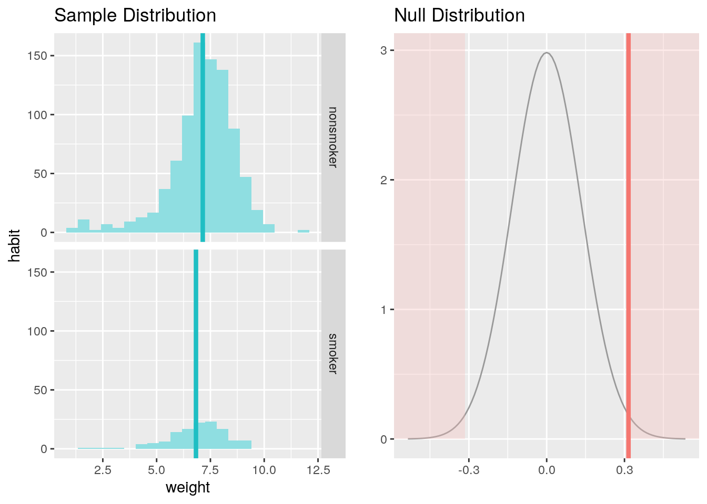
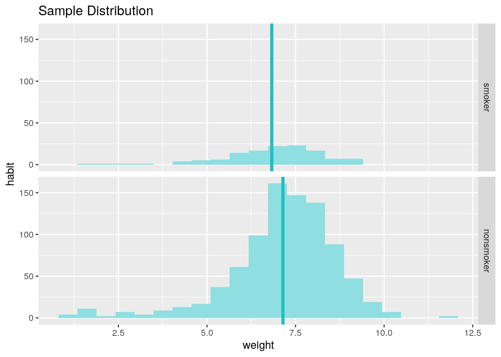

Week 3
Week 3 is about making inferences about numerical data.
Complete all Exercises, and submit answers to Questions on the Coursera platform.
0.9 Getting Started
0.9.1 Load packages
In this lab we will explore the data using the dplyr package and visualize it using the ggplot2 package for data visualization. The data can be found in the companion package for this course, statsr.
Let’s load the packages.
library(statsr)
library(dplyr)
library(ggplot2)0.9.2 The data
In 2004, the state of North Carolina released a large data set containing information on births recorded in this state. This data set is useful to researchers studying the relation between habits and practices of expectant mothers and the birth of their children. We will work with a random sample of observations from this data set.
Load the nc data set into our workspace.
data(nc)We have observations on 13 different variables, some categorical and some numerical. The meaning of each variable is as follows.
| variable | description |
|---|---|
fage |
father’s age in years. |
mage |
mother’s age in years. |
mature |
maturity status of mother. |
weeks |
length of pregnancy in weeks. |
premie |
whether the birth was classified as premature (premie) or full-term. |
visits |
number of hospital visits during pregnancy. |
marital |
whether mother is married or not married at birth. |
gained |
weight gained by mother during pregnancy in pounds. |
weight |
weight of the baby at birth in pounds. |
lowbirthweight |
whether baby was classified as low birthweight (low) or not (not low). |
gender |
gender of the baby, female or male. |
habit |
status of the mother as a nonsmoker or a smoker. |
whitemom |
whether mom is white or not white. |
- There are 1,000 cases in this data set, what do the cases represent?
- The hospitals where the births took place
- The fathers of the children
- The days of the births
- The births
As a first step in the analysis, we should take a look at the variables in the dataset. This can be done using the str command:
str(nc)## Classes 'tbl_df', 'tbl' and 'data.frame': 1000 obs. of 13 variables:
## $ fage : int NA NA 19 21 NA NA 18 17 NA 20 ...
## $ mage : int 13 14 15 15 15 15 15 15 16 16 ...
## $ mature : Factor w/ 2 levels "mature mom","younger mom": 2 2 2 2 2 2 2 2 2 2 ...
## $ weeks : int 39 42 37 41 39 38 37 35 38 37 ...
## $ premie : Factor w/ 2 levels "full term","premie": 1 1 1 1 1 1 1 2 1 1 ...
## $ visits : int 10 15 11 6 9 19 12 5 9 13 ...
## $ marital : Factor w/ 2 levels "married","not married": 1 1 1 1 1 1 1 1 1 1 ...
## $ gained : int 38 20 38 34 27 22 76 15 NA 52 ...
## $ weight : num 7.63 7.88 6.63 8 6.38 5.38 8.44 4.69 8.81 6.94 ...
## $ lowbirthweight: Factor w/ 2 levels "low","not low": 2 2 2 2 2 1 2 1 2 2 ...
## $ gender : Factor w/ 2 levels "female","male": 2 2 1 2 1 2 2 2 2 1 ...
## $ habit : Factor w/ 2 levels "nonsmoker","smoker": 1 1 1 1 1 1 1 1 1 1 ...
## $ whitemom : Factor w/ 2 levels "not white","white": 1 1 2 2 1 1 1 1 2 2 ...As you review the variable summaries, consider which variables are categorical and which are numerical. For numerical variables, are there outliers? If you aren’t sure or want to take a closer look at the data, make a graph.
0.10 Exploratory data analysis
We will first start with analyzing the weight gained by mothers throughout the pregnancy: gained.
Using visualization and summary statistics, describe the distribution of weight gained by mothers during pregnancy. The summary function can also be useful.
summary(nc$gained)## Min. 1st Qu. Median Mean 3rd Qu. Max. NA's
## 0.00 20.00 30.00 30.33 38.00 85.00 27- How many mothers are we missing weight gain data from?
- 0
- 13
- 27
- 31
Next, consider the possible relationship between a mother’s smoking habit and the weight of her baby. Plotting the data is a useful first step because it helps us quickly visualize trends, identify strong associations, and develop research questions.
- Make side-by-side boxplots of
habitandweight. Which of the following is false about the relationship between habit and weight?- Median birth weight of babies born to non-smoker mothers is slightly higher than that of babies born to smoker mothers.
- Range of birth weights of babies born to non-smoker mothers is greater than that of babies born to smoker mothers.
- Both distributions are extremely right skewed.
- The IQRs of the distributions are roughly equal.
# type your code for the Question 3 here, and Knit
#boxplot(nc$habit,nc$weight)
ggplot(nc, aes(x=habit, y=weight)) + geom_boxplot()The box plots show how the medians of the two distributions compare, but we can also compare the means of the distributions using the following to first group the data by the habit variable, and then calculate the mean weight in these groups using the mean function.
nc %>%
group_by(habit) %>%
summarise(mean_weight = mean(weight))## # A tibble: 3 x 2
## habit mean_weight
## <fct> <dbl>
## 1 nonsmoker 7.14
## 2 smoker 6.83
## 3 <NA> 3.63There is an observed difference, but is this difference statistically significant? In order to answer this question we will conduct a hypothesis test.
0.11 Inference
Exercise: Are all conditions necessary for inference satisfied? Comment on each. You can compute the group sizes using the same by command above but replacing mean(weight) with n().
Answer: This is the case of inference where two means are compared and t-distribution will be used. The categories are independent by definition and the number of samples are assumed to be <10% of the entire population as there would be many number of cases. Both the group distributions are not very skewed as per the box plots above.
nc %>%
group_by(habit) %>%
summarise(no_of_cases = n())## # A tibble: 3 x 2
## habit no_of_cases
## <fct> <int>
## 1 nonsmoker 873
## 2 smoker 126
## 3 <NA> 1- What are the hypotheses for testing if the average weights of babies born to smoking and non-smoking mothers are different?
- \(H_0: \mu_{smoking} = \mu_{non-smoking}\); \(H_A: \mu_{smoking} > \mu_{non-smoking}\)
- \(H_0: \mu_{smoking} = \mu_{non-smoking}\); \(H_A: \mu_{smoking} \ne \mu_{non-smoking}\)
- \(H_0: \bar{x}_{smoking} = \bar{x}_{non-smoking}\); \(H_A: \bar{x}_{smoking} > \bar{x}_{non-smoking}\)
- \(H_0: \bar{x}_{smoking} = \bar{x}_{non-smoking}\); \(H_A: \bar{x}_{smoking} > \bar{x}_{non-smoking}\)
- \(H_0: \mu_{smoking} \ne \mu_{non-smoking}\); \(H_A: \mu_{smoking} = \mu_{non-smoking}\)
Next, we introduce a new function, inference, that we will use for conducting hypothesis tests and constructing confidence intervals.
Then, run the following:
inference(y = weight, x = habit, data = nc, statistic = "mean", type = "ht", null = 0,
alternative = "twosided", method = "theoretical")## Response variable: numerical
## Explanatory variable: categorical (2 levels)
## n_nonsmoker = 873, y_bar_nonsmoker = 7.1443, s_nonsmoker = 1.5187
## n_smoker = 126, y_bar_smoker = 6.8287, s_smoker = 1.3862
## H0: mu_nonsmoker = mu_smoker
## HA: mu_nonsmoker != mu_smoker
## t = 2.359, df = 125
## p_value = 0.0199
Let’s pause for a moment to go through the arguments of this custom function. The first argument is y, which is the response variable that we are interested in: weight. The second argument is the explanatory variable, x, which is the variable that splits the data into two groups, smokers and non-smokers: habit. The third argument, data, is the data frame these variables are stored in. Next is statistic, which is the sample statistic we’re using, or similarly, the population parameter we’re estimating. In future labs we can also work with “median” and “proportion”. Next we decide on the type of inference we want: a hypothesis test ("ht") or a confidence interval ("ci"). When performing a hypothesis test, we also need to supply the null value, which in this case is 0, since the null hypothesis sets the two population means equal to each other. The alternative hypothesis can be "less", "greater", or "twosided". Lastly, the method of inference can be "theoretical" or "simulation" based.
For more information on the inference function see the help file with ?inference.
Exercise: What is the conclusion of the hypothesis test?
- Change the
typeargument to"ci"to construct and record a confidence interval for the difference between the weights of babies born to nonsmoking and smoking mothers, and interpret this interval in context of the data. Note that by default you’ll get a 95% confidence interval. If you want to change the confidence level, add a new argument (conf_level) which takes on a value between 0 and 1. Also note that when doing a confidence interval arguments likenullandalternativeare not useful, so make sure to remove them.- We are 95% confident that babies born to nonsmoker mothers are on average 0.05 to 0.58 pounds lighter at birth than babies born to smoker mothers.
- We are 95% confident that the difference in average weights of babies whose moms are smokers and nonsmokers is between 0.05 to 0.58 pounds.
- We are 95% confident that the difference in average weights of babies in this sample whose moms are smokers and nonsmokers is between 0.05 to 0.58 pounds.
- We are 95% confident that babies born to nonsmoker mothers are on average 0.05 to 0.58 pounds heavier at birth than babies born to smoker mothers.
# type your code for the Question 5 here, and Knit
inference(y = weight, x = habit, data = nc, statistic = "mean", type = "ci", method = "theoretical")## Response variable: numerical, Explanatory variable: categorical (2 levels)
## n_nonsmoker = 873, y_bar_nonsmoker = 7.1443, s_nonsmoker = 1.5187
## n_smoker = 126, y_bar_smoker = 6.8287, s_smoker = 1.3862
## 95% CI (nonsmoker - smoker): (0.0508 , 0.5803)By default the function reports an interval for (\(\mu_{nonsmoker} - \mu_{smoker}\)) . We can easily change this order by using the order argument:
inference(y = weight, x = habit, data = nc, statistic = "mean", type = "ci",
method = "theoretical", order = c("smoker","nonsmoker"))## Response variable: numerical, Explanatory variable: categorical (2 levels)
## n_smoker = 126, y_bar_smoker = 6.8287, s_smoker = 1.3862
## n_nonsmoker = 873, y_bar_nonsmoker = 7.1443, s_nonsmoker = 1.5187
## 95% CI (smoker - nonsmoker): (-0.5803 , -0.0508)
- Calculate a 99% confidence interval for the average length of pregnancies (
weeks). Note that since you’re doing inference on a single population parameter, there is no explanatory variable, so you can omit thexvariable from the function. Which of the following is the correct interpretation of this interval?- (38.1526 , 38.5168)
- (38.0892 , 38.5661)
- (6.9779 , 7.2241)
- (38.0952 , 38.5742)
# type your code for Question 6 here, and Knit
inference(y = weeks, data = nc, statistic = "mean", type = "ci", conf_level = 0.99, method = "theoretical")## Single numerical variable
## n = 998, y-bar = 38.3347, s = 2.9316
## 99% CI: (38.0952 , 38.5742)
Exercise: Calculate a new confidence interval for the same parameter at the 90% confidence level. Comment on the width of this interval versus the one obtained in the the previous exercise.
Answer: This CI is narrower compared to the 99% CI.
# type your code for the Exercise here, and Knit
inference(y = weeks, data = nc, statistic = "mean", type = "ci", conf_level = 0.90, method = "theoretical")## Single numerical variable
## n = 998, y-bar = 38.3347, s = 2.9316
## 90% CI: (38.1819 , 38.4874)Exercise: Conduct a hypothesis test evaluating whether the average weight gained by younger mothers is different than the average weight gained by mature mothers.
# type your code for the Exercise here, and Knit
#str(nc)
inference(y = weight, x = mature, data = nc, statistic = "mean", type = "ht", method = "theoretical", alternative = "twosided", null = 0)## Response variable: numerical
## Explanatory variable: categorical (2 levels)
## n_mature mom = 133, y_bar_mature mom = 7.1256, s_mature mom = 1.6591
## n_younger mom = 867, y_bar_younger mom = 7.0972, s_younger mom = 1.4855
## H0: mu_mature mom = mu_younger mom
## HA: mu_mature mom != mu_younger mom
## t = 0.1858, df = 132
## p_value = 0.8529- Now, a non-inference task: Determine the age cutoff for younger and mature mothers. Use a method of your choice, and explain how your method works.
# type your code for Question 7 here, and Knit
#str(nc)
nc %>%
group_by(mature) %>% #blocking for maturity by this line of code
summarise(min = min(mage), max = max(mage)) # summarizing the ages in a table## # A tibble: 2 x 3
## mature min max
## <fct> <dbl> <dbl>
## 1 mature mom 35 50
## 2 younger mom 13 34Exercise: Pick a pair of variables: one numerical (response) and one categorical (explanatory). Come up with a research question evaluating the relationship between these variables. Formulate the question in a way that it can be answered using a hypothesis test and/or a confidence interval. Answer your question using the inference function, report the statistical results, and also provide an explanation in plain language. Be sure to check all assumptions,state your \(\alpha\) level, and conclude in context. (Note: Picking your own variables, coming up with a research question, and analyzing the data to answer this question is basically what you’ll need to do for your project as well.)
# type your code for the Exercise here, and KnitThis is a product of OpenIntro that is released under a Creative Commons Attribution-ShareAlike 3.0 Unported. This lab was written for OpenIntro by Andrew Bray and Mine Çetinkaya-Rundel.